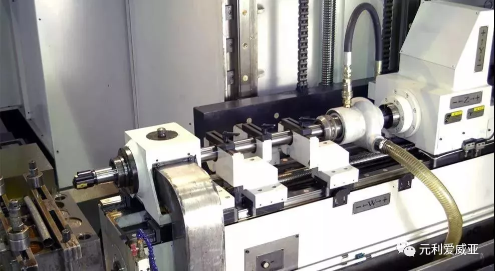
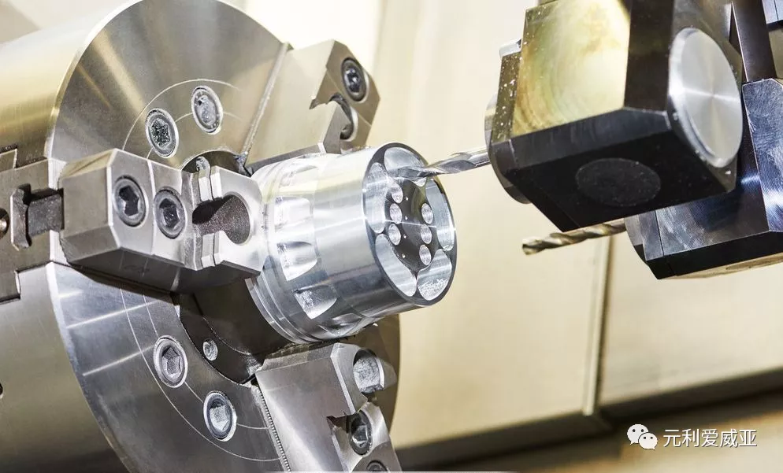

机械设备都是需要保养的，机床当然也是如此。作为制造机器的机器，机床在金属加工中占据了重要地位，将机床保养好才能在生产发挥最大效益。而对于机床保养来说，机床润滑是必不可少的。润滑油不仅能减低机械的摩擦，还能冷却降温、密封防漏、防止锈蚀、减震缓冲及清洗清洁等作用，增加机床的使用寿命，种种好处都说明了润滑保养的作用之大。


机床润滑的方式盘点
机床润滑的方式有很多种，常见的分别是手工加油润滑、滴油润滑、油绳润滑、自吸润滑、离心润滑、油浴润滑、油环润滑、飞溅润滑、刮板润滑、滚轮润滑、喷射润滑手动泵压油润滑、压力循环润滑、自动定时定量润滑、油雾润滑等等。
机床润滑方式的选择要根据机床的结构、自动化程度、机床使用的工况及对精密度的要求进行综合衡量而作出决定的，机床润滑在满足减磨降耗的同时要力求避免温升和振动。

机床润滑的注意事项
1、机床中的主要零部件多为典型机械零部件，标准化、通用化，系列化程度高。例如滑动轴承、滚动轴承、齿轮、蜗轮副、滚动及滑动导轨、螺旋传动副(丝杠螺母副)、离合器、液压系统、凸轮等等，润滑情况各不相同。
2、机床的使用环境条件：机床通常安装在室内环境中使用，夏季环境温度最高为40℃，冬季气温低于0℃时多采取供暖方式，使环境温度高于5-10℃。高精度机床要求恒温空调环境，一般在20℃上下。但由于不少机床的精度要求和自动化程度较高，对润滑油的粘度、抗氧化性(使用寿命)和油的清洁度的要求较严格。
3、机床的工况条件：不同类型的不同规格尺寸的机床，甚至在同一种机床上由于加工件的情况不同，工况条件有很大不同。对润滑的要求有所不同。例如高速内圆磨床的砂轮主轴轴承与重型机床的重载、低速主轴轴承对润滑方法和润滑剂的要求有很大不同。前者需要使用油雾或油/气润滑系统润滑，使用较低粘度的润滑油，而后者则需用油浴或压力循环润滑系统润滑，使用较高粘度的油品。
4、润滑油品与润滑冷却液、橡胶密封件、油漆材料等的适应性：在大多数机床上使用了润滑冷却液，在润滑油中，常常由于混入冷却液而使油品乳化及变质、机件生锈等，使橡胶密封件膨胀变形，使零件表面油漆涂层气泡、剥落。因此考虑油品与润滑冷却液、橡胶密封件、油漆材料的适应性、防止漏油等。特别是随着机床自动化程度的提高，在一些自动化和数控机床上使用了润滑/冷却通用油，既可作润滑油、也可作为润滑冷却液使用。